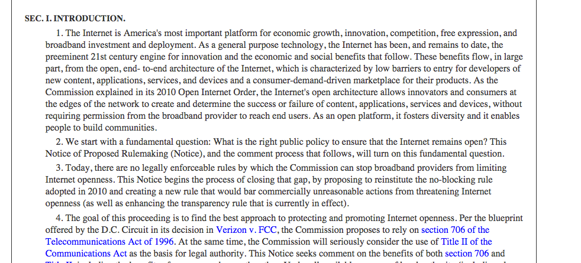
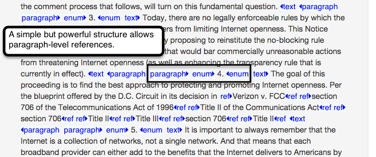
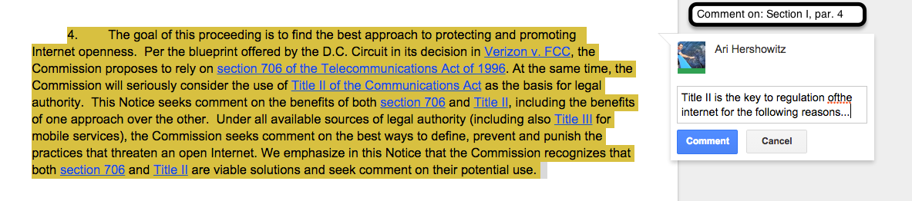
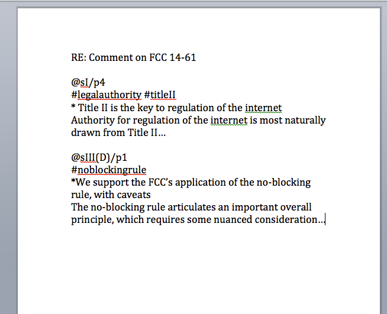

Notice and Comment:
Modernized
Make it easier to:
- Comment meaningfully.
- Read and navigate comments.
- Review, respond and integrate comments.
Implementation Steps
- Structure Regulation for Pinpoint Reference
- Comment may include metadata:
- Pinpoint citation
- Summary and
- Labels
- Offline and paper comments can also add these elements with standardized formatting.
1. Structure Regulation for Pinpoint Reference
Regulation styled with CSS
Same regulation showing underlying structure
Comment can cite 'Section I, Paragraph 4'
(sI/p4)
2. Comment metadata: Cite, Summary and Label
Cite: For precision
Summary: For sentiment
Label: For context and categorization
3. Offline and paper comments can add metadata with standardized formatting
Cite: @sI/p1
Summary: *SummaryText
Label: #netneutrality, #legalauthority, #privacy
Metadata facilitates search and automation for public and agency

StackOverflow uses tags or labels to filter search results
Metadata concerning the content of submissions will enrich the existing data released by FCC on the comment source (http://www.fcc.gov/files/ecfs/14-28/ecfs-files.htm)
Structured input will help structure responses
- "Hotspots" in regulation can be highlighted.
- Overall sentiment can be gathered.
- Unique insights can be identified.
- Agencies will still need to read and consider comments, but will do so with better tools, efficiency and public transparency.
Xcential LLC
Software for Law
Presented with: Reveal.js Created by Hakim El Hattab / @hakimel